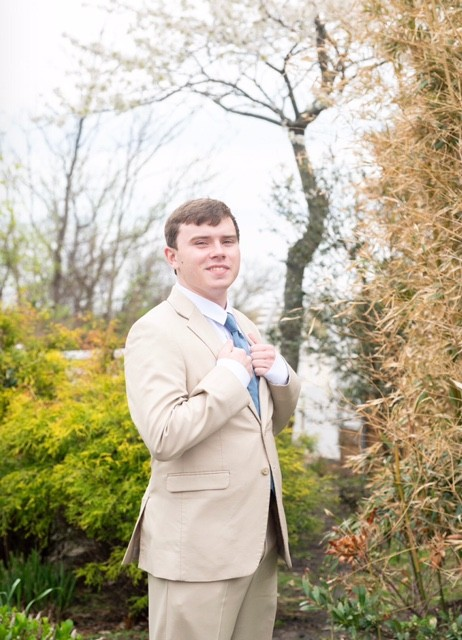

Throughout my journey at Farmingdale State College, I started off with a Bachelors Degree for Science, Technology, and Society (STS), which was a 4-year undecided major. With that major, there was a course that I took called, BCS 260: Computers, Technology and Society, and that got me into my strong interest to pursue in a Bachelors for Computer Programming and Information Systems.
As I started with the major, it was completely difficult at first as I didn't understand most of the terminology, but with time and patience, I started to took things step by step and started to become familiar with the key factors.
All of the courses for my major that I've taken, there's one class that got me interested, BCS 130: Website Development I. This course has helped me figure out what I wanted to do after college, and that's becoming a web/website developer.